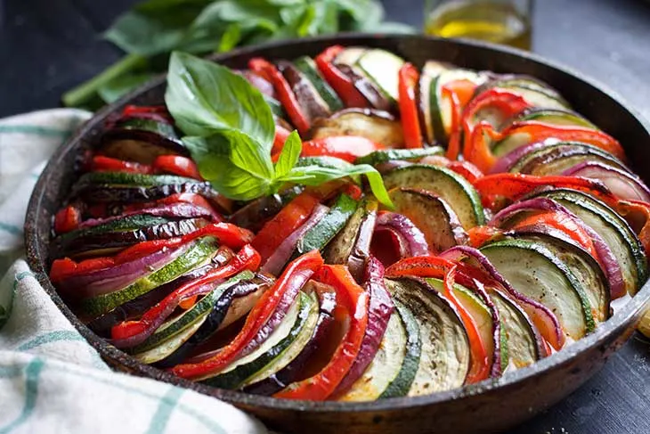

Ratatouille

Description
A dish well renowned due to being in the famous animated movie of the same name, it is worthy of being on every recipe site inspired by pop culture. This dish is a guaranteed blast from the past!
Ingredients
- 2 medium zucchinis, sliced
- 2 medium eggplant, sliced
- 1 medium red onion, sliced
- 2 medium red bell pepper, sliced
- 4 sprigs fresh basil
- 1 tsp dry oregano
- 1 Tbsp olive oil
- salt and pepper
For the sauce:
- 1 Tbsp olive oil
- 2 cloves garlic, minced
- 8 small tomatoes, peeled and crushed
- 2 thyme sprigs
- salt and pepper
Steps
- Preheat the oven to 200C.
- Heat a large, oven-friendly skillet over medium heat.
- Add the olive oil, minced garlic, thyme and saute for 2 minutes.
- Add tomatoes and continue to cook for about 10 minutes, stirring occasionally. Add salt and pepper, to taste.
- Place the sliced veggies, in the skillet over the sauce, in a spiral pattern around the skillet until the entire pan is covered.
- Brush the veggies with the olive oil and sprinkle them with salt, pepper, and oregano.
- Bake in the oven about 50 minutes or until the veggies are soft and tender.
- Serve with fresh basil leaves on top.
Back to main